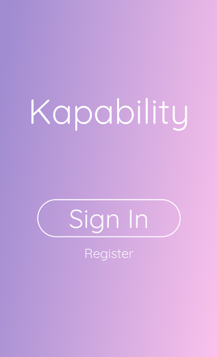
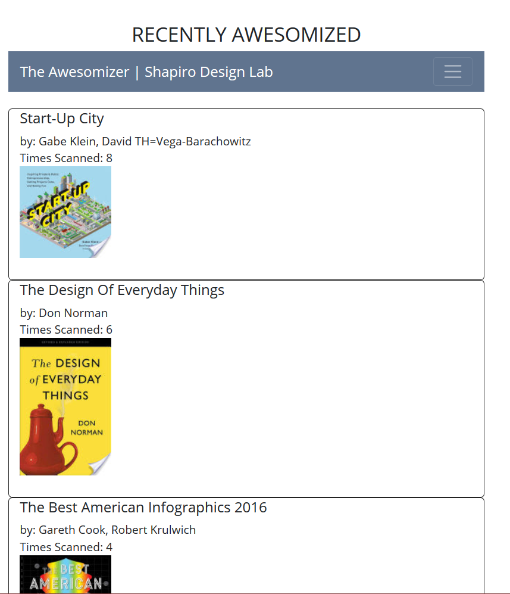

projects.
Projects I have worked on in spare time.
kapability.

Kapability is an application that connects employers with job-seekers who have a disability, improving overall client visibility, job opportunities, and financial mobility. Offering unique services caered towards clients with disabilities, Kapability allows them to find work quicker and more efficiently.
the awesomizer.
